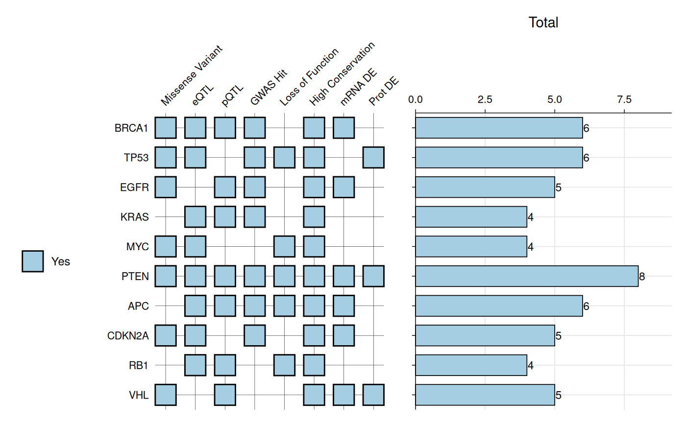
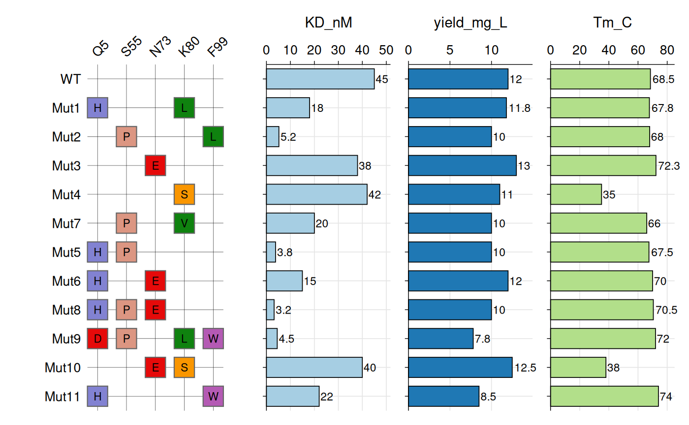

Creates a tile-based heatmap visualization where samples are displayed on the y-axis and criteria are shown on the x-axis. Each tile shows a criterion value with color coding. Optional barplots can be added to the right side to display numeric metrics for each sample.
Usage
gg_criteria(
data,
id = "id",
criteria = "_criteria",
bar_column = NULL,
bar_fill = NULL,
panel_ratio = 0.3,
tile_width = 0.7,
tile_height = 0.7,
tile_alpha = 1,
tile_fill = NULL,
show_text = TRUE,
border_color = "black",
border_width = 0.5,
text_size = 8,
show_legend = TRUE,
quiet = FALSE
)Arguments
- data
A data frame containing the data to visualize.
- id
Character string specifying the column name in
datathat contains sample identifiers. Default is "id".- criteria
Character string specifying either: (1) the column name in
datathat contains criterion names (long data, not yet supported), or (2) a regular expression pattern that identifies the criterion columns (wide data, e.g.,"_criteria$"to matchPass_criteria,Fail_criteria, etc.). Default is "_criteria".- bar_column
Character vector specifying column name(s) in
datato display as horizontal barplot(s) to the right of the heatmap. Columns must be numeric. Default is NULL (no barplots).- bar_fill
Character vector specifying the fill color(s) for bars. When
bar_columncontains multiple elements, colors are recycled if necessary to match the number of bars. If NULL (default), uses colors from the Brewer "Paired" palette.- panel_ratio
Numeric value specifying the total relative width of the barplot panel(s) compared to the heatmap panel (which has a reference width of 1). When multiple
bar_columnvalues are provided, this width is divided equally among them. For example,panel_ratio = 0.3creates a 1:0.3 width ratio between heatmap and barplot panels. Only used whenbar_columnis not NULL. Default is 0.3.- tile_width
Numeric value (0-1) specifying the width of tiles as a proportion of available space. Default is 0.7.
- tile_height
Numeric value (0-1) specifying the height of tiles as a proportion of available space. Default is 0.7.
- tile_alpha
Numeric value (0-1) specifying transparency of tiles. Default is 1 (fully opaque).
- tile_fill
Named character vector of colors for criterion values (e.g.,
c(Pass = "green", Fail = "red")). If NULL (default), uses the Brewer "Paired" palette.- show_text
Logical indicating whether to show criterion values as text labels on tiles. Default is TRUE.
- border_color
Character string specifying the color of tile borders. Default is "black".
- border_width
Numeric value specifying the width of tile borders. Default is 0.5.
- text_size
Numeric value specifying the size of axis text. Default is 8.
- show_legend
Logical indicating whether to show the fill legend. Default is TRUE.
- quiet
Logical indicating whether to suppress messages. Default is FALSE.
Value
A ggplot2 object (or patchwork object if bar_column is used)
showing the criteria heatmap. The plot displays:
Tiles at each sample-criterion intersection
Tile colors indicating criterion values
Criterion values as text labels within tiles
Optional horizontal barplots on the right side
A "recommended_dims" attribute with suggested width and height in inches
Details
The function currently supports wide format data where each criterion is a
separate column. The column names should match the pattern specified in
criteria (e.g., columns ending in "_crit"). The pattern is removed
from column names to create criterion labels.
When bar_column is specified, horizontal barplots are added to the
right side of the heatmap. Multiple barplots can be created by providing a
vector of column names. Each barplot shows the numeric values with text
labels positioned outside the bars.
The function calculates and suggests plot dimensions based on the number of
samples and criteria. Access these via attr(plot, "recommended_dims").
WARNING: Alignment between heatmap and barplots depends on plot dimensions.
The function provides recommended dimensions (accessible via
attr(plot, "recommended_dims")) that ensure proper alignment. You
can adjust these dimensions to improve appearance (e.g., reduce width to
tighten spacing, or scale proportionally for size) while maintaining
alignment.
Examples
# Example: Gene prioritization criteria
gene_data <- data.frame(
gene = c("BRCA1", "TP53", "EGFR", "KRAS", "MYC",
"PTEN", "APC", "CDKN2A", "RB1", "VHL"),
`Missense Variant_crit` = c("Yes", "Yes", "Yes", NA, "Yes",
"Yes", NA, "Yes", NA, "Yes"),
`eQTL_crit` = c("Yes", "Yes", NA, "Yes", "Yes",
"Yes", "Yes", "Yes", "Yes", NA),
`pQTL_crit` = c("Yes", NA, "Yes", "Yes", NA,
"Yes", "Yes", NA, "Yes", "Yes"),
`GWAS Hit_crit` = c("Yes", "Yes", "Yes", "Yes", NA,
"Yes", "Yes", "Yes", NA, NA),
`Loss of Function_crit` = c(NA, "Yes", NA, NA, "Yes",
"Yes", "Yes", NA, "Yes", NA),
`High Conservation_crit` = c("Yes", "Yes", "Yes", "Yes", "Yes",
"Yes", "Yes", "Yes", "Yes", "Yes"),
`mRNA DE_crit` = c("Yes", NA, "Yes", NA, NA,
"Yes", "Yes", "Yes", NA, "Yes"),
`Prot DE_crit` = c(NA, "Yes", NA, NA, NA,
"Yes", NA, NA, NA, "Yes"),
check.names = FALSE
)
# Calculate total criteria met
crit_cols <- grep("_crit$", names(gene_data), value = TRUE)
gene_data$`Total` <- rowSums(gene_data[crit_cols] == "Yes", na.rm = TRUE)
# Base criteria plot
# **Warn**: space between heatmap and barplots depends on plot width
gg_criteria(
data = gene_data,
id = "gene",
criteria = "_crit$",
bar_column = "Total",
show_text = FALSE,
tile_fill = c(Yes = "#A6CEE3", No = "white"),
bar_fill = "#A6CEE3",
panel_ratio = 1
)
#> Recommended dimensions: 7.2 x 5.5 inches

# Example: VHH Variant Analysis
# Define amino acid chemistry colors
aa_colors <- c(
"D" = "#E60A0A", "E" = "#E60A0A", # Acidic (red)
"K" = "#145AFF", "R" = "#145AFF", # Basic (blue)
"H" = "#8282D2", # Histidine (purple)
"S" = "#FA9600", "T" = "#FA9600", # Polar uncharged (orange)
"N" = "#00DCDC", "Q" = "#00DCDC", # Polar amides (cyan)
"C" = "#E6E600", # Cysteine (yellow)
"G" = "#EBEBEB", # Glycine (light gray)
"P" = "#DC9682", # Proline (tan)
"A" = "#C8C8C8", # Alanine (gray)
"V" = "#0F820F", "I" = "#0F820F", # Hydrophobic (green)
"L" = "#0F820F", "M" = "#0F820F",
"F" = "#3232AA", "W" = "#B45AB4", # Aromatic (dark blue/purple)
"Y" = "#3232AA"
)
vhh_variants <- data.frame(
variant = c("WT", "Mut1", "Mut2", "Mut3", "Mut4", "Mut7", "Mut5",
"Mut6", "Mut8", "Mut9", "Mut10", "Mut11"),
Q5_mut = c(NA, "H", NA, NA, NA, NA, "H", "H", "H", "D", NA, "H"),
S55_mut = c(NA, NA, "P", NA, NA, "P", "P", NA, "P", "P", NA, NA),
N73_mut = c(NA, NA, NA, "E", NA, NA, NA, "E", "E", NA, "E", NA),
K80_mut = c(NA, "L", NA, NA, "S", "V", NA, NA, NA, "L", "S", NA),
F99_mut = c(NA, NA, "L", NA, NA, NA, NA, NA, NA, "W", NA, "W"),
KD_nM = c(45, 18, 5.2, 38, 42, 20, 3.8, 15, 3.2, 4.5, 40, 22),
yield_mg_L = c(12, 11.8, 10, 13, 11, 10, 10, 12, 10, 7.8, 12.5, 8.5),
Tm_C = c(68.5, 67.8, 68, 72.3, 35, 66, 67.5, 70, 70.5, 72, 38, 74)
)
# Create the systematic variant heatmap
gg_criteria(
data = vhh_variants,
id = "variant",
criteria = "_mut$",
tile_fill = aa_colors,
bar_column = c("KD_nM", "yield_mg_L", "Tm_C"),
panel_ratio = 2,
tile_width = 0.70,
tile_height = 0.70,
show_text = TRUE,
border_color = "grey40",
border_width = 0.4,
text_size = 10,
show_legend = FALSE
)
#> Recommended dimensions: 10.0 x 5.9 inches
